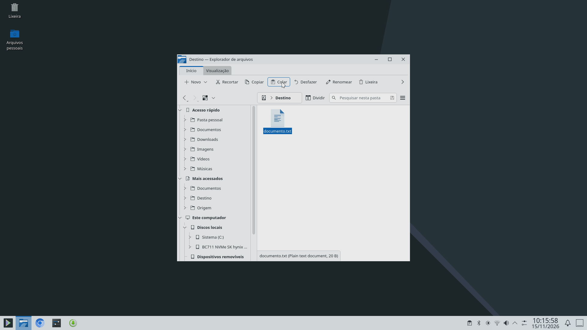

No Explorador, selecione o item e use Início → Copiar ou Recortar. Abra a pasta de destino e clique em Colar. A mesma aba oferece Renomear e Lixeira.
Para renomear vários itens, selecione-os no Explorador e escolha Renomear em lote com prévia… no menu de contexto. Use {nome} para preservar o nome original, {data} para incluir a data de alteração ou {n} para numerar. Confira a coluna Situação antes de aplicar.
Se um arquivo ou unidade estiver em uso, escolha Ver processos usando este item… no menu de contexto. O relatório mostra os processos que sua conta pode consultar.
